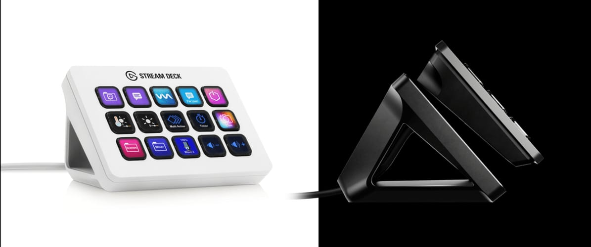

Elgato Stream Deck MK.2 直播控制台

Elgato Stream Deck MK.2 拥有 15 个可自定义 LCD 按键，一键触发直播切换、场景控制、音效与宏命令。插件生态覆盖 OBS、Discord、Spotify 等主流软件，可换式面框与可调支架，是主播、UP 主与效率党的可编程控制台。
客观评测
Stream Deck MK.2 配备 15 个独立 LCD 按键，每键显示自定义图标并支持文件夹分页扩展功能数量。通过 Stream Deck 软件拖拽配置，可绑定快捷键、多步宏、文字输入与脚本，插件市场覆盖 OBS、Discord、Spotify、飞书/钉钉等数百款应用。MK.2 相对初代增加了可调节支架与可更换面框，USB-C 连接供电即用。它本质上是把屏幕上的操作物理化，学习与配置需要一定时间投入，价格对轻度用户不算友好。
主观点评
直播时切场景、放音效、开关麦克风一按搞定，观众看到的流畅背后其实是它在工作。不直播的人也能玩：一键打开工作环境、会议静音、日常宏都值得摆上桌面。看着一排自己画的图标亮着，本身就是桌搭仪式感的一部分。只是它属于“越会折腾越强大”的设备，懒人可能吃灰。
优点与不足
- 15 键可编程，直播与工作流一键直达
- 插件生态成熟，主流软件开箱支持
- 可换面框与可调支架，桌面颜值高
- 千元价位对非创作者偏贵
- 不带旋钮与触感盲操，需低头看键
- 配置需要折腾，深度玩法依赖插件与宏
参数规格
| 按键 | 15 个可自定义 LCD 按键 |
|---|---|
| 按键显示 | 彩色 LCD 图标，支持自定义与文件夹分页 |
| 连接 | USB-C 连接 |
| 软件 | Stream Deck 软件，拖拽式配置 |
| 插件生态 | OBS、Twitch、Discord、Spotify 等海量插件 |
| 宏功能 | 多步操作组合、快捷键与文字输入 |
| 支架 | 可调节角度支架（MK.2） |
| 面框 | 可更换个性化面框（MK.2） |
| 系统 | Windows 10 / macOS 及以上 |
| 供电 | USB 总线供电 |
| 重量 | 约 250-300g（约数） |
| 扩展 | 支持多个 Stream Deck 叠加使用 |